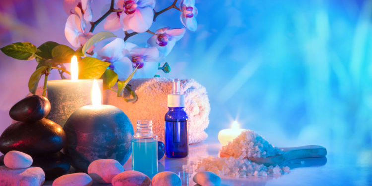
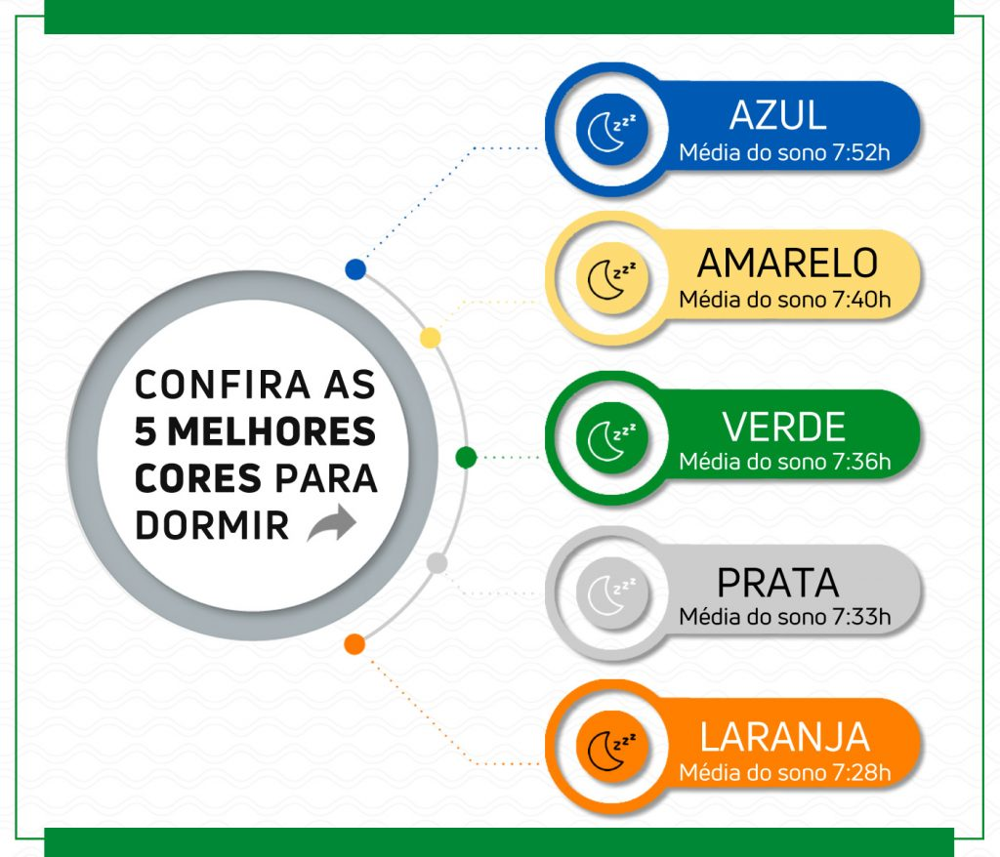

Apresentação do empreendimento
O hotel terá uma aparência Vitoriana e será localizado em alguma praia ou campo do
Brasil, e seu público alvo são pessoas com alto poder aquisitivo.
O hotel spa Volúpia, será classificado com 5 estrelas , é o lugar feito para pessoas que
precisam de um relaxamento corpóreo e mental.
Atrativo principal do SPA
O SPA disponibilizará a seus clientes tratamento terapêutico, por meio de cores (cromoterapia) e os aromas dos produtos (aromaterapia), desta forma pretende-se que o hospede tenha lembranças dos momentos mais felizes da sua vida, graça a teoria das
cores e dos cheiros que contém um fundamento psicológico.
A psicologia dos aromas pode trazer benefícios diversos, como melhorar a qualidade
do sono, reduzir os sintomas de estresse e ansiedade, auxiliar no combate à
depressão, aumentar a sensação de bem-estar e promover o relaxamento da mente e
do corpo.
Já as cores diferentes são percebidas de formas diferentes. Por exemplo,
tons de vermelho levam a sensações de excitação, enquanto os tons de azul costumam
ser associados a sensações de relaxamento.
Ambas as emoções são agradáveis,
portanto, quaisquer cores podem gerar sentimentos positivos dependendo do seu
objetivo.
Como será o tratamento
Usando produtos veganos da própria linha do hotel, cujo tratamento será personalizado, com base nas informações do que o cliente precisa, conforme formulário existente no site previamente respondido.
O tratamento terá acompanhamento com psicólogos nas suas hospedagens solo, cuja renovação será feita no mínimo em três dias. Os profissionais em questão estariam a disposição para conversar com os clientes, para que se sintam confortáveis.
Imagens da Cromoterapia
 imagem 01 - cromoterapia
 imagem 02 - cromoterapia
Imagens da aromaterapia

Vamos relaxar - assista o video
Então é isso! Espero que você tenha gostado da nossa apresentação com relação ao nosso empreedimento Volúpia Hotel SPA.